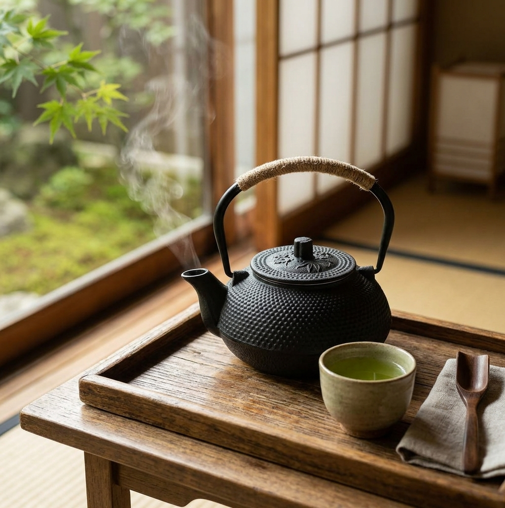

A Japanese-style tetsubin with a hobnail texture, woven handle, and stainless steel infuser, made for slow, warm cups of tea.

Cast iron holds heat well, so the second cup stays as warm as the first.
The enameled inside is designed for brewing tea, with a stainless steel infuser for loose leaf.
The hobnail pattern and woven handle make it a striking piece on any counter or table.
Tetsubin are a symbol of Japanese tea culture. Traditionally used to heat water, this style also works as a teapot for loose leaf tea.
It is a lovely gift for anyone who enjoys a quiet cup and a beautiful object.
Place loose leaf tea in the infuser.
Fill with water heated on a stove or kettle.
Wait a few minutes, then pour into small cups.
The listing describes it as stovetop safe. Read the care notes on the product page before using.
Cast iron can rust if left wet. Dry it well after each use.
Cast iron is heavier than ceramic, so pour with care.
A cast iron tetsubin-style teapot - see current pricing and availability on Amazon.
Check Price on Amazon →